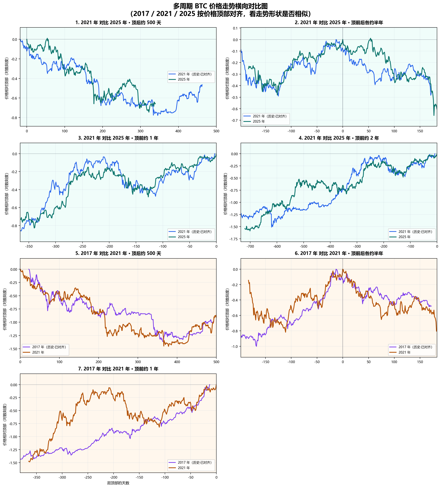
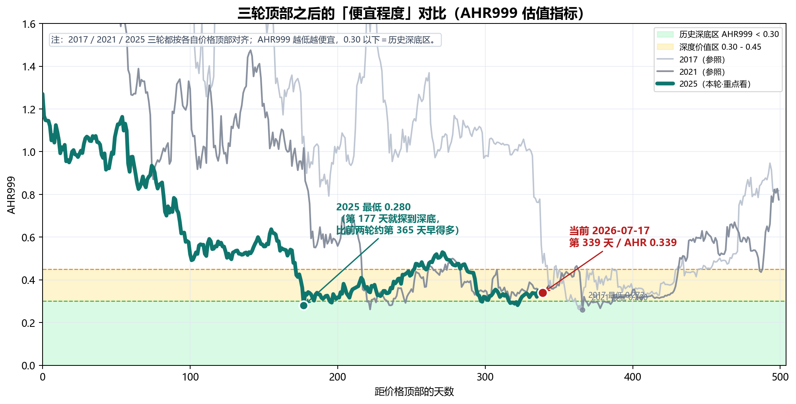

生成日期：2026-06-25 ｜ 2026 年 6 月 · 家庭内部讨论稿
目的：判断是否支持一笔小额、分批、无杠杆的 BTC 长期配置。
内容按重要性排列：多周期价格走势对比、AHR999 估值、比特币基本面，最后是用户结构。
本次更新（2026-06-25）：上一版（06-08）之后 BTC 继续走低，今日约 $59,488（较 2025-10 真顶约 -52%，近三日约 -5%），已经跌进本报告 §8 标注的「55–60k 合理预期区间」——但比预期时间（2026 年 11 月前后）早了约 5 个月。这一点不改变本报告的任何纪律：价格提前进区间 ≠ 见底时间已到。多周期对比（§2）显示见底时间大概率仍在 2026 年 10 月前后，当前更像 2 月第一脚低点（约 $63,846）之后的「W 底回测」。所以仍按 §8 的时间窗口分批，不因这次下跌提前抢跑，也不因短期波动恐慌。本版 §5 的链上招牌数字也已刷新到 6 月：长持持仓创历史新高、且 30 天净仓位首次转入吸筹（2025-07 以来第一次），但要诚实地说，ETF 在这波下跌中是净流出的——详见 §5。
这不是押身家，也不是短线投机。可以支持的是：在不影响养老、家庭现金流和应急金的前提下，用很小一部分可承受损失的钱，分批买一点 BTC。
理由按重要性排列：
| 证据 | 现在看到的事实 | 对买入的意义 |
|---|---|---|
| 多周期价格对比（最重要） | 三轮减半→顶节奏对齐：成熟两轮「减半→顶」约 536 天，本轮预测与实际顶部仅差 2 天 | 不应该把仓位一次打完，要尊重底部时间带 |
| AHR999 多年横向结构 | 2026-06-25 重算 AHR999 为 0.288，三轮真周期顶后低点都压在 0.26–0.28，本轮已落入历史深底区（<0.30）、逼近 2 月低点 0.280 | 支持进入 2026 年 8 月后的分批计划，但它不是单独买入理由 |
| 第一性原理 | BTC 的账本、发行上限、共识、自托管属性没有因为价格下跌而失效 | 价格跌，不等于协议坏 |
| 真实用户结构 | 大头是长持、ETF、财库等低频资本；长持 30 天净仓位 2026-06 首次转正（2025-07 以来第一次）= 刚从派发切到吸筹，今天跌破 $59k 也没恐慌割肉 | BTC 更像储备资产；本轮是"弱手割肉、长持接盘" |
最终动作很简单：
这部分是最近真正有价值的研究：不靠预测，而是把不同周期的价格走势按各自的「顶部」对齐，直接比较它们的形状、涨跌幅度和时间节奏是否相似。
最硬的一个事实：成熟两轮（2017、2021）的「减半 → 价格顶部」间隔约 536 天（误差仅约 10 天）。以 2024-04-20 减半为锚，推得本轮顶部约在 2025-10-08，而实际顶部在 2025-10-06——误差只有 2 天。本轮（2025）的对比基准统一取 2025-08-12，经过筛选，正式采用 7 组有效的周期对比。
诚实提示（这条最该跟父母讲清）：周期节奏吻合得很惊人，但它靠的是历史高度吻合，不是大样本统计——可对比的成熟周期只有 2017、2021 两轮，能用来比的样本本来就只有 1–2 组。所以它只能告诉你「大概的时间带」，不能当成精确到某一天的保证。正因如此，执行上才必须分批、按时间窗口等待，而不是赌某个具体点位。
下图把 2017、2021、2025 三轮按价格顶部对齐，看走势形状是否相似。每一格是一对周期的叠合：早一轮的走势（已对齐）和晚一轮的走势放在一起比。

| 看什么 | 三轮对比看到的 | 对买入的含义 |
|---|---|---|
| 涨跌幅度 | 本轮（2025）相对上一轮（2021）的涨幅明显变小，大约只有六成 | 行情在“退烧”，别期待同样夸张的涨幅 |
| 时间节奏 | 三轮的时间节奏高度接近——从顶到底要走的时间几乎一样长 | 见底时间大概率还没到，不该提前抢跑 |
| 整体形状 | 顶部前后的走势形状彼此相似，没有大幅走样 | 这一轮目前仍在“按老剧本走”的范围内 |
这对执行的意义很直接：三轮时间节奏几乎一样长，意味着本轮见底大概率还没到，不应该因为短期价格波动就提前认定“今天就是最低点”。这套对比支持的是“按时间窗口分批等待”，不是“现在一次买完”。
AHR999 只作为估值辅助，不单独决定买入。正确用法不是看一个孤立数值，也不是看价格条形图，而是把多年结构放在同一条横轴上比较。
为什么把它排第二：和上面的多周期价格对比相比，AHR999 这条腿其实统计上更稳——它用的是 2017、2021、2025 三轮真周期，而且三轮顶后的低点读数高度一致（都在 0.26–0.28、都在第 364/366 天附近）。它最经得起追问。
下图把 2017、2021、2025 三轮都按价格顶部对齐，横轴是距顶部的天数，纵轴是 AHR999（越低越便宜，越往下越值得买）。只要盯深色那条「2025（本轮）」线：它在第 177 天就探到了和前两轮一样深的底，比 2017、2021（约要到第 365 天才见底）早了不少；当前（红点）已落入历史深底区内。两条浅灰线（2017、2021）只是背景参照，不用细看。

| 周期 | 价格顶部 | AHR999 低点日期 | 距顶部天数 | AHR999 低点 | 结构含义 |
|---|---|---|---|---|---|
| 2017 顶后 | 2017-12-16 | 2018-12-15 | 第 364 天 | 0.272 | 历史深底区 |
| 2021 顶后 | 2021-11-08 | 2022-11-09 | 第 366 天 | 0.260 | 历史深底区 |
| 2025 顶后 | 2025-08-12 | 2026-02-05 | 第 177 天 | 0.280 | 本轮已出现一次深底读数 |
| 当前 | 2025-08-12 | 2026-06-25 | 第 317 天 | 0.288 | 已落入深底区，逼近 2 月低点 |
这说明 AHR999 口径下，本轮价格已经重新回到历史深底附近。但 AHR999 不能替代多周期价格对比：它只能说明价格低估，不能说明最低点已经出现。
从第一性原理看，BTC 最底层的问题不是今天涨跌多少，而是这套系统还是否成立。
| 第一性原理问题 | 当前状态 | 解释 |
|---|---|---|
| 账本是否还可信 | 没有被破坏 | 交易历史仍由全网节点验证，篡改成本仍极高 |
| 发行规则是否还可信 | 没有被破坏 | 2100 万枚上限和减半规则没有改变 |
| 共识是否还在 | 没有破裂 | 节点、矿工、交易所、钱包仍承认 BTC 主规则 |
| 自托管属性是否还在 | 没有消失 | 用户仍可自持私钥并无需许可转移价值 |
| 安全预算是否立刻失效 | 没有立刻失效 | 矿工收入会受价格影响，但难度调整机制会让系统再平衡 |
所以，价格大跌可以说明边际买盘弱了，但不能直接说明 BTC 协议坏了。真正会破坏 BTC 的，是 2100 万上限被修改、全节点验证能力严重中心化、矿工或矿池被可控实体集中、长期手续费无法支撑安全预算，或者市场不再认为 BTC 是最可信的数字稀缺资产。
这一轮下跌如果主要来自赎回、减仓、清算、风险偏好下降，那属于价格发现层面的变化，不是第一性原理层面的崩塌。
这一节是补充背景，不是核心证据。一句话：BTC 的真正用户不是每天在链上转账的人，而是低频的长期持有资本。
价值大头集中在大额低频账户（背景数据）：
| 口径 | 数据（2026-06 更新） | 含义 |
|---|---|---|
| ≥100 BTC 的大额地址 | 约占地址数 0.03%，合计持有 >60% 流通供应 | 价值大头在大额低频账户，仍处历史高位 |
| 美国现货 BTC ETF 持币 | 约 1,248,218 BTC（2026-06-22），较 5 月高点净流出约 5 万枚 | 传统金融入口仍是大通道，但短期会赎回 |
| 公开公司+政府 BTC 财库 | 约 1,899,138 BTC，约占总供应 9.04%（CoinGecko 188 家机构） | 财库逆势增持，越来越长期化、机构化 |
这不是没有风险：集中化会带来 ETF 赎回、托管、监管和财库公司踩踏风险。但从基本面角度，它说明 BTC 越来越像数字黄金或储备资产，而不是日常支付网络。
零配置等于认为 BTC 没有任何长期配置价值。但当前四条证据并不支持零配置：
| 问题 | 当前回答 |
|---|---|
| 周期结构是否完全失真 | 7 组周期对比显示时间节奏仍有延续性 |
| 当前价格是否高估 | AHR999 已接近历史深底区 |
| 协议是否坏了 | 没有看到第一性原理层面的破坏 |
| 真实用户是否消失 | 没有。低频资本用户和 长期持有者仍在 |
所以，合理动作不是重仓，而是小额参与。
不能多买的核心原因不是“我们不看好 BTC”，而是 BTC 的收益和风险同时存在。它不是一家会赚钱、会分红、会回购、会持续产生现金流的公司。BTC 本身没有股息，也没有利润表，不能像好生意一样靠经营现金流长期给持有人分钱。
BTC 更接近一种抗通胀、抗货币贬值、抗信用扩张的稀缺资产。它的长期价值来自稀缺性、共识和别人愿意用更高价格持有它，而不是来自内生现金流。因此它可以作为家庭资产里的小额对冲，但不能成为家庭安全的核心依赖。
| 资产属性 | 对收益的意义 | 对仓位的结论 |
|---|---|---|
| 没有股息 | 持有期间不会自动产生现金收入 | 不能指望它替代稳定收入资产 |
| 没有经营利润 | 不是一家会持续赚钱的好生意 | 不能按“买优秀公司”的逻辑重仓 |
| 价格来自共识和稀缺性重估 | 上涨空间存在，但依赖市场重新定价 | 可以小额参与，不能赌身家 |
| 高波动、可长期下跌或横盘 | 判断对了也可能熬很久 | 必须分批，必须有现金流缓冲 |
| 集中化、托管、监管、ETF 赎回、财库踩踏风险 | 短期会放大下跌 | 仓位上限必须提前定死 |
因此买入上限必须提前定死：
| 纪律 | 说明 |
|---|---|
| 不用养老钱 | 父母生活安全永远优先 |
| 不用应急金 | 医疗、家庭现金流、房屋支出优先 |
| 不借钱 | 杠杆会把长期判断变成短期爆仓 |
| 不一次买完 | 周期对比显示时间还没完全走完 |
| 不追涨加仓 | 涨了也只按原计划执行 |
这不是价格阶梯计划。正确计划是时间窗口计划：从 2026 年 8 月开始买，不管当月价格是否刚好跌到某个点位，按月小额分批买到 2027 年 2 月。价格只用来判断“这笔买得是否舒服”，不是触发器。
| 时间 | 动作 | 价格口径 |
|---|---|---|
| 2026-08 | 第一笔小额买入 | 不等某个具体价格 |
| 2026-09 | 第二笔小额买入 | 继续按计划，不因反弹补仓 |
| 2026-10 | 第三笔小额买入 | 同时复查 长期持有者是否仍在吸筹 |
| 2026-11 | 第四笔小额买入 | 价格若在 60k-55k 区间，属于合理预期范围 |
| 2026-12 | 第五笔小额买入 | 不因为短期涨跌改变总额度 |
| 2027-01 | 第六笔小额买入 | 继续保持小额、无杠杆 |
| 2027-02 | 最后一笔小额买入，结束本轮计划 | 买完后停止追加计划外仓位 |
因此，55k-60k 不是“必须等到才买”的触发线，而是本轮时间窗口内较合理的价格期望区间。（2026-06 更新：价格已提前跌进这个区间，但这正是“不提前抢跑”纪律要管住的情形——价格到位不等于时间到位。） 真正的纪律是：从 2026 年 8 月买到 2027 年 2 月，总金额提前定死，不能因为下跌临时加码，也不能因为反弹追着补仓。
建议总金额只占家庭可投资资产中非常小的一部分。亏完也不影响生活，才有资格买。
| 错误信号 | 动作 |
|---|---|
| 2100 万上限或核心共识出现实质破坏 | 立即重新评估 |
| 自托管、出入金、转账自由被系统性压制 | 暂停买入 |
| 长期持有者从吸筹转为持续派发 | 暂停买入 |
| 减半周期结构被证实失效（如 ETF/机构体制取代旧节奏） | 重新评估周期对比 / AHR999 模型是否还适用 |
| 家庭现金流或应急金需要钱 | 停止买入 |
| 买入后心态变成想梭哈、借钱、追涨 | 停止买入 |
我们希望得到的支持不是相信 BTC 一定涨，而是支持一个有边界的小额长期配置实验。
这笔钱的意义，不是赌现在马上赚钱，而是在 BTC 深度回撤、周期节奏还没有失真、AHR999 处在多年低估区附近、核心协议基本面未坏、长期持有者仍低频吸筹时，用可承受的小金额买入未来几年的可能性。
最重要的是：这笔钱不能影响家庭生活。它可以亏，可以等很多年，但不能让父母承担心理和现金流压力。
内部数据：
data/btc_merged_daily.csv：BTC 日线合并数据。analysis_runs/2026-06-07_parent_btc_allocation_report/peak_structure_report_summary.csv：按 2025-08-12 peak 锚点过滤后的正式报告 7 个有效窗口组。analysis_runs/2026-06-04_segment_experiments/segment_cycle_samples_v19_summary.csv：原始 peak 样本汇总；正式报告已剔除旧分支。analysis_runs/2026-06-07_parent_btc_allocation_report/make_peak_structure_charts.py：peak 结构 7 窗口图表生成脚本。analysis_runs/2026-06-07_parent_btc_allocation_report/png/peak_structure_all_windows_grid.png：7 个有效 peak 窗口叠合图。analysis_runs/2026-06-07_parent_btc_allocation_report/png/peak_structure_window_metrics.png：7 个有效 peak 窗口参数总览图。analysis_runs/2026-06-07_parent_btc_allocation_report/ahr999_recalc_to_2026-06-05.csv：按最新本地价格重算的 AHR999 日线。analysis_runs/2026-06-07_parent_btc_allocation_report/ahr999_cycle_overlay_summary.csv：按 2025-08-12 peak 锚点生成的 AHR999 顶后横向结构汇总。analysis_runs/2026-06-07_parent_btc_allocation_report/make_ahr999_cycle_overlay.py：AHR999 多年横向结构图生成脚本。data/lth_metrics.csv：长期持有者供应、占比和 30 日净变化（仅公开基准点，非多年曲线）。外部来源：
免责声明：本报告是家庭内部研究材料，不是投资顾问建议。BTC 属于高波动、高不确定性资产，只适合小额、长期、可承受损失的资金。